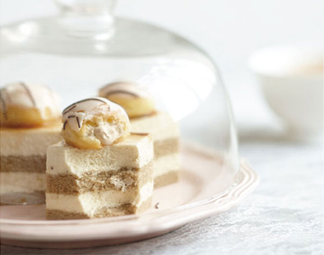
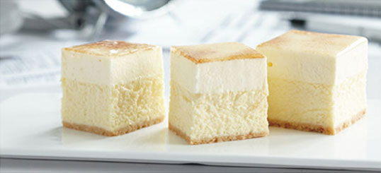

是英国本土品牌。最初源自于安德森利特尔顿先生的手工蛋糕作坊。安德森利特尔顿先生（1799~1861）一生专注于蛋糕制作，曾任职英国王室蛋糕师，创造出的鲜美可口、外表雍容华贵的蛋糕受到皇室的青睐。维多利亚女王亲自为其颂发女王勋章并授予骑士称号。现安德森利特尔顿先生的后人居住在美国费城，上海印克电子商务有限公司经过多年的拜访，2012年正式将INCAKE品牌引入中国，并采用网络订购这一最前端的订购模式。秉承了传统英式手工蛋糕制作，甄选世界优质食材，传承纯正英国风味。
上海印克电子商务有限公司专注于向顾客提供全方位的体验，并带来卓越的价值。INCAKE印克网络蛋糕打破了眼下传统的蛋糕销售模式，通过网络，移动端，客服热线全方位链接消费，一对一定制英式蛋糕服务。让客户体验最IN的购物新风尚。并强调要在生产过程中对人的价值的关注，对消费者、对环境、对社会的贡献。用心烘焙和真诚的笑容是INCAKE最高宗旨。优质的选材和英伦皇室的经典配方是INCAKE印克蛋糕的核心竞争力。在中国，INCAKE不断投入产品研发创新，并保证英式蛋糕的纯正口味。在中国引领着最in的英式风潮。
下午茶是英国传统的精华所在，一首英国民谣就是这样唱的：“当时钟敲响四下时，世上的一切瞬间为茶而停”。INCAKE作为英国的本土品牌，希望下午茶文化在中国得到更多人的更多认可与喜爱，成为生活中不可或缺的一部分。无论是传统下午茶的内涵丰硕、形式优雅。还是在忙里偷闲中的一杯茶饮配以英式蛋糕的简约下午茶。这不仅仅是一种对美食的渴望，更是每个人对生活的态度。INCAKE希望无论是朋友小聚、在家或是在工作中，随时随地享受精致的生活品质。
GOLDEN
PROPORTION
黄金比例配方
INCAKE在进行几千次、几万次的烘焙失败，才搭配出来完美的精确组合与精确比例，在制作每一款蛋糕时，蛋糕师都专注于每一个制作细节、严苛的制作步骤和时间。传承纯正的英国皇室风味，每一种组合和配比都是经典时尚的完美邂逅。
THE BEST
MATERIALS
优质食材
我们坚信每一个国家的食材都有着独特的个性，为了寻找到优质的食材我们开始了INCAKE世界之旅--比利时的黑巧克力，法国的铁塔奶油……甄选世界各地优质食材来制作出无与伦比的美味。只选用季节性的最新鲜的水果，这是我们的用心承若。
PERFECT
PROCESS
完美工艺
保留手工，并引进精确的蛋糕生产设备，其组合制作出完美工艺，在水果、坚果等蛋糕配饰上，我们的INCAKE都选择了手工艺挑选，颗颗饱满清甜。无论是味觉与视觉都是一种完美的享受。
PRODUCTION
STANDARD
生产标准
INCAKE秉诺用心烘焙、用心服务、用心打造一个让国人安心食用的健康烘焙品牌。食品安全是食品从业人的根基与责任，INCAKE目标成为国内知名烘焙品牌的同时，也将追求最安全的烘焙列在企业文化首位。